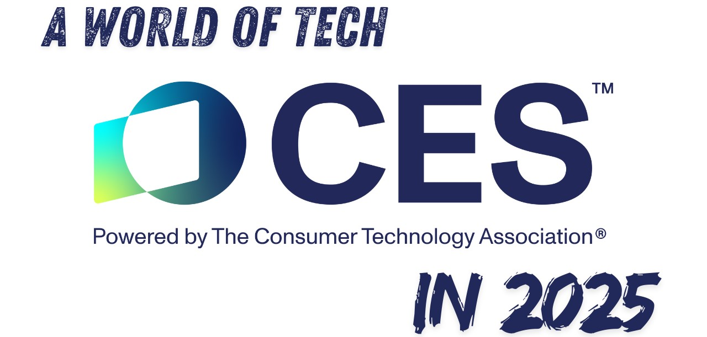

Groundbreaking Gaming Innovations at CES 2025

The Consumer Electronics Show (CES) 2025 has once again provided an unparalleled stage
for showcasing cutting-edge advancements in gaming technology. This year’s event, held in Las Vegas,
demonstrated the gaming industry’s continued push toward innovation and immersive experiences.
From next-gen hardware to revolutionary software enhancements, CES 2025 highlighted the future of
interactive entertainment.
Scroll down to read more.
AI-Driven Gaming Evolution
Nvidia’s Revolutionary Announcements
Nvidia stole the spotlight with the introduction of its GeForce RTX 50 series GPUs, based on the new Blackwell architecture. These GPUs are expected to redefine graphical fidelity and performance. One of the standout features is the enhanced use of AI for gaming. Nvidia showcased their AI-driven rendering capabilities, which promise smoother frame rates and real-time adjustments to lighting, textures, and environments. Furthermore, Nvidia unveiled its collaboration with KRAFTON to bring AI Co-Playable Characters (CPCs) to life. These characters, powered by Nvidia’s ACE technology, are designed to exhibit human-like behavior, adapting to player actions and contributing to immersive storytelling. The first implementation of CPCs will debut in KRAFTON’s upcoming game "inZOI," setting a new standard for AI-driven gameplay.Handheld Gaming Wars Intensify
Nintendo Switch 2 Hype
Rumors surrounding the Nintendo Switch 2 have reached a fever pitch, with fans and industry insiders eagerly awaiting official confirmation. While Nintendo remained tight-lipped, industry whispers suggest significant hardware upgrades, including improved graphics capabilities and an OLED display. CES saw peripheral manufacturer Genki showcasing concept accessories designed for the rumored console, though they later clarified that these designs were speculative.The Rise of PC Handhelds
Valve’s Steam Deck has paved the way for a surge of PC handhelds, with multiple competitors now entering the market. Devices like Lenovo’s Legion Go S and Ayaneo’s Air Pro are pushing the boundaries of portable PC gaming. Lenovo’s Legion Go S, priced at $499, stands out with its compatibility with SteamOS, providing gamers with a seamless integration of PC gaming libraries. This trend signals an era where gaming enthusiasts will have more portable options without compromising performance.Modular Gaming Takes Center Stage
Intel, in collaboration with Quanta, unveiled a concept device that pushes the limits of modular computing. This gaming-focused device can transform between a tablet, laptop, and desktop configuration, thanks to a detachable AI core. While still in the prototype phase, this innovation reflects a future where gamers can adapt their devices to their preferences, maximizing utility and longevity.Immersion Redefined by Sony
Sony unveiled its Future Immersive Entertainment Concept, a bold step towards sensory-based gaming. This technology encompasses a fully immersive room equipped with reactive LED walls, haptic-feedback furniture, dynamic soundscapes, and scent-emitting devices. The demonstration, featuring scenes from The Last of Us, allowed attendees to experience an unprecedented level of immersion. While the concept received praise for its innovation, questions about its practicality and high costs have sparked debates about its market viability.Microsoft’s Foray Into Handheld Consoles
Microsoft confirmed development of a handheld Xbox console, marking the company’s entry into the burgeoning portable gaming market. Early details suggest that the device will feature a new gaming-optimized operating system blending Xbox and Windows capabilities. This move underscores Microsoft’s ambition to compete with established handheld platforms like the Nintendo Switch and Steam Deck. Though in its nascent stages, the announcement has already created buzz among Xbox fans eager for a portable gaming solution.Innovative Gaming Laptops and Accessories
CES 2025 also witnessed the unveiling of groundbreaking gaming laptops that blend performance with futuristic design.- Lenovo ThinkBook Plus Gen 6: This laptop features a rollable display that transitions from a compact laptop to an extended workstation, catering to gamers and professionals alike.
- Asus ROG Strix Scar: Renowned for its extravagant RGB lighting and AniMe display, this laptop remains a favorite among competitive gamers, boasting unparalleled performance and aesthetic appeal.
Cloud Gaming Gets a Boost
Cloud gaming continued to make waves at CES 2025, with significant strides in latency reduction and accessibility. Nvidia's GeForce Now showcased new partnerships with ISPs to deliver ultra-low-latency gaming, while Google Stadia's revival project hinted at a more robust infrastructure for cloud-based gaming. These developments promise to make high-quality gaming experiences available on a wider range of devices, breaking down barriers of hardware requirements.VR and AR: The Next Frontier
Virtual Reality (VR) and Augmented Reality (AR) innovations were another highlight of CES 2025. Meta showcased the next iteration of its Quest Pro headset, which boasts a lighter design, advanced hand-tracking, and a wider field of view. Meanwhile, HTC revealed the VIVE Edge, an AR-focused device aimed at bridging the gap between gaming and real-world interactions. These advancements indicate a growing emphasis on immersive, mixed-reality experiences in gaming.The Future of Game Development
Game development tools and engines also saw remarkable advancements at CES 2025. Unreal Engine 5.3, showcased by Epic Games, introduced enhanced AI-driven asset generation and real-time environmental physics. These features aim to simplify the game development process while enabling developers to create richer, more detailed worlds. Smaller studios stand to benefit significantly, as these tools lower the barrier to creating AAA-quality games.Sustainability in Gaming Hardware
Sustainability was a recurring theme at CES 2025, with manufacturers showcasing eco-friendly gaming hardware. Companies like Razer revealed plans to incorporate recycled materials into their products, while Logitech showcased biodegradable accessories. These efforts align with the industry’s growing commitment to reducing environmental impact.Conclusion
CES 2025 reaffirmed the gaming industry’s relentless pursuit of innovation. From AI-powered gameplay to modular devices and immersive sensory environments, this year’s event highlighted the diverse directions in which gaming technology is evolving. With the boundaries of interactive entertainment continually expanding, the future holds unprecedented opportunities for gamers and developers alike. As these technologies transition from concept to reality, they promise to reshape the gaming landscape, offering experiences that are more engaging, accessible, and sustainable.